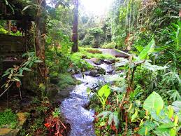
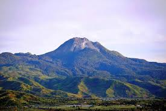
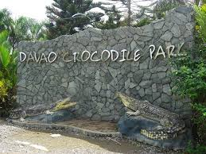
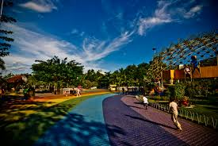
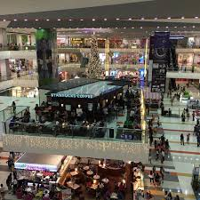
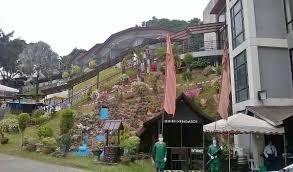
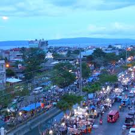

Davao del Sur is a province in Mindanao known for its diverse natural attractions, cultural heritage, and adventure destinations. From majestic mountains and waterfalls to pristine beaches and vibrant cultural sites, the province offers a unique travel experience for nature lovers, thrill-seekers, and cultural explorers alike.
Davao del Sur is one of the most diverse tourist destinations in Mindanao, offering a combination of eco-tourism, cultural heritage, adventure activities, and coastal relaxation. Its strategic location near Davao City makes it easily accessible, while still preserving its natural beauty and traditional way of life.








